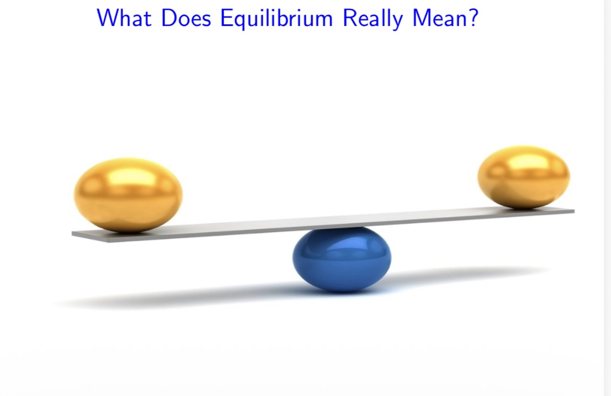

Economics
Things to know
- Econmics is applicable in our daily life
- Economics exists because there is scarcity and available alternative resources
Keywords in Economics
- Scarcity refers to limited resources voer umimited wants
- Scarce resources have alternative uses
- Economic agents is an individual or group that make choices
Definition of Economics
- Economics is the study of how economic agents choose to allocate scarce resources which have alternative uses
Economics is divided into two main branches as a subject
- Macro economics
- Micro economics
Tabular difference between the types of Economics
| In terms of |
Macro economics |
Micro economics |
| Production |
National output |
Individual ouput |
| Price |
Rate of inflation |
Individual price(food prices) |
| Income |
National income |
Individual wages |
| Employment |
Unemployment rate |
No. of employers in a firm |
Principles of Economics
- Equilibrium
- Optimization
- Empiricism
A situation in which no one benefits by changing his/her
behavior.
Thus equilibrium is the special situation in which everyone is
optimizing in the society, so nobody would benefit personally
by changing his or her own behavior.
An Image of two objects in equilibrium

login page